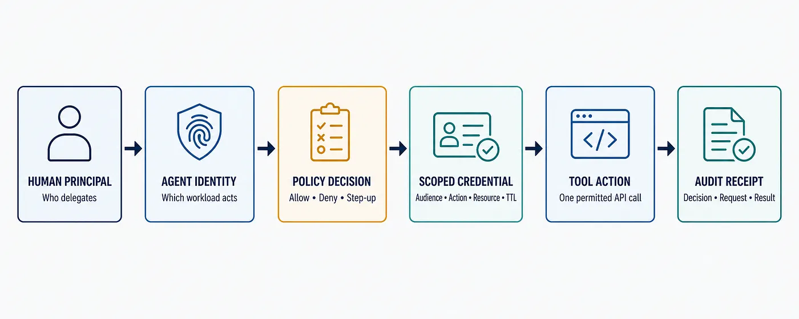
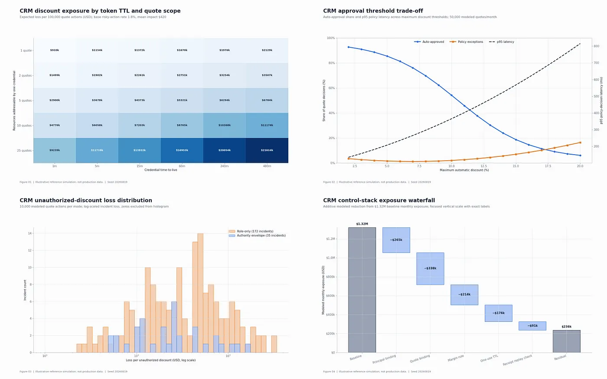
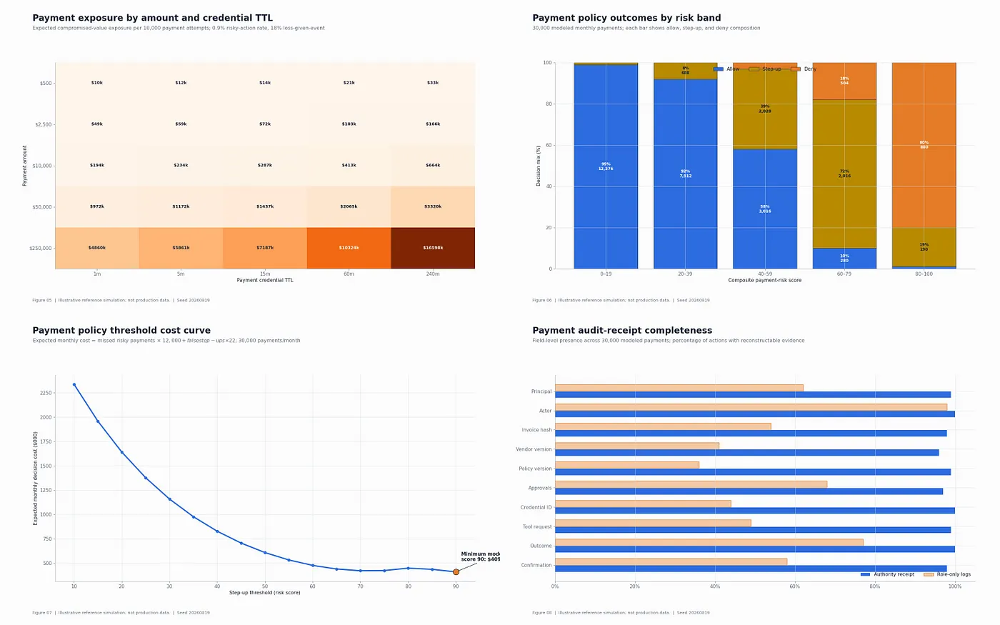
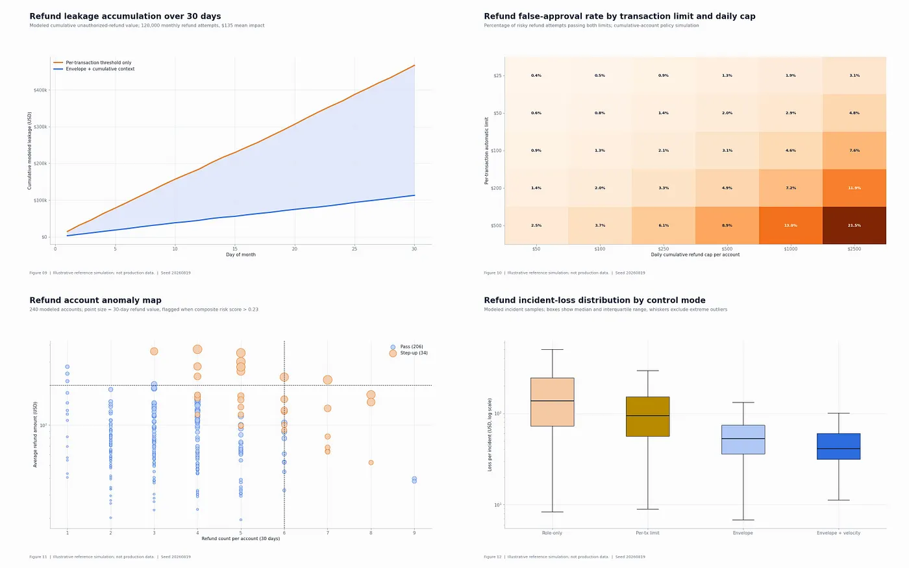
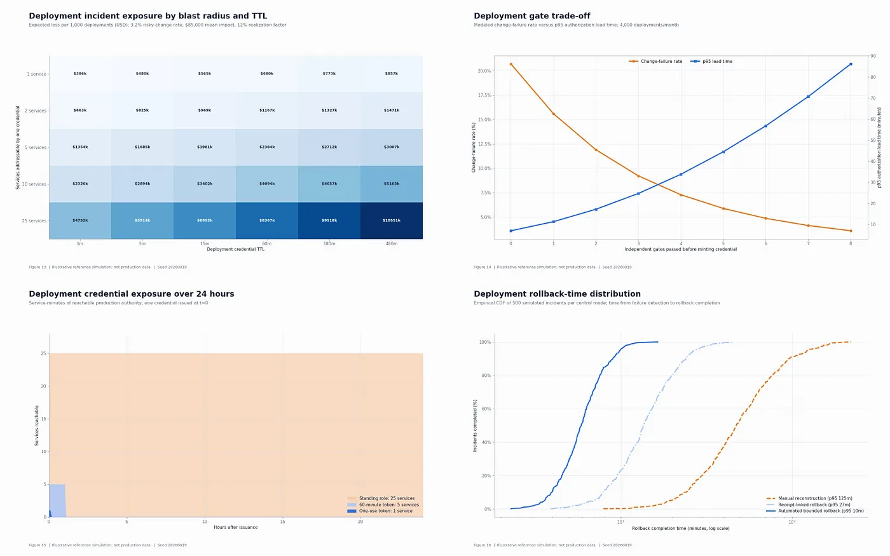
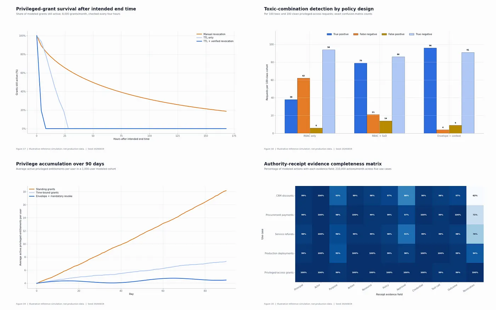

Five enterprise use cases show how to bind a human principal, agent identity, policy decision, scoped credential, tool action, and audit receipt
This story was written with the assistance of an AI writing program and reviewed by the author.
An enterprise AI agent can be perfectly authenticated and still be dangerously over-authorized.
Imagine a CRM agent preparing a renewal. It authenticates with a valid workload identity, calls an approved pricing tool, and changes the quote exactly as instructed. The problem appears only afterward: the user who asked for “the best renewal offer” could approve 5%, the agent applied 15%, and the access token proved only that the agent could edit quotes. Nothing in the transaction proved whose authority was being spent, which discount was allowed, or when that authority should expire.
That distinction is becoming a production concern, not a theoretical one. In a 2026 concept paper, NIST asked how agents should prove their authority for a specific action, how “on behalf of” delegation should work, how agent identity should bind back to human approval, and how resulting actions should be auditable and non-repudiable.
Those questions point to a gap in many current designs. We give an agent an identity. We assign it a role. We connect it to tools. Then we treat those three facts as permission to act.
They are not.
Three questions, not one
Every consequential agent action should answer three separate questions:
- Identity: Which agent or workload is acting?
- Delegation: On whose behalf is the agent acting?
- Authorization: What exact action, on which resource, under what limit and context, is allowed now?
Identity makes the agent distinguishable. Delegation preserves the accountable human or business principal. Authorization converts intent into a narrow decision that a tool can enforce.
A fourth question follows immediately: What evidence proves what happened?
This is the purpose of an authority envelope: a transaction-level description of the principal, agent actor, action, resource, purpose, limits, time window, environmental conditions, permitted tool, escalation rule, and evidence requirement.
The term is a design pattern I use here, not a formal standard. Its value is practical: it forces a broad request such as “handle this renewal” or “resolve this complaint” into an explicit, inspectable boundary before an agent receives an action-capable credential.

Figure 1. Human principal → Agent identity → Policy decision → Scoped credential → Tool action → Audit receipt. Image created with AI assistance; concept and labels by Aditya Singh.
The chain looks simple. The difficult part is making every box transaction-specific. The following five use cases show what that means in practice.
Use case 1: A CRM agent approves a discount
A sales agent is useful when it can move beyond summarizing an opportunity and help complete the commercial decision. That is also the moment when a generic CRM role becomes dangerous.
Suppose the agent prepares a renewal quote. The account owner asks it to optimize the offer. The system knows the agent may edit quotes, but “edit” hides the decision that matters: can this user delegate approval for this product, this customer, this margin, and this percentage?
The authority envelope might contain:
- Principal: the account owner or named pricing approver
- Actor: the production CRM quote agent
- Action: approve_discount
- Resource: one quote linked to one opportunity and customer
- Purpose: renewal retention
- Limits: maximum discount, margin floor, product and region
- Time: valid for the current pricing session only
- Tool: the CPQ pricing endpoint, not a generic CRM administrator API
- Escalation: pricing desk approval if a threshold is exceeded or facts are incomplete
The failure mode is not necessarily a malicious model. It can be a valid token with a scope that is too broad. If that token remains usable for hours, the agent may alter a second quote, repeat an approval after conditions change, or act on an opportunity owned by another team.
The audit receipt should preserve the original request, quote version, policy version, input facts, decision, human approval when required, credential identifier and expiry, tool request, and before-and-after commercial terms.
The operating question is no longer “Did the agent call the correct API?” It is “Can we prove that this principal delegated this discount on this quote under this margin boundary?”
Useful metrics include receipt completeness, unauthorized-change attempts, escalation turnaround, and the percentage of discounts approved automatically within policy.
Use case 2: A procurement agent initiates a payment
Payments expose the weakness of role-only authorization even more quickly.
An accounts-payable agent may reconcile an invoice, validate a purchase order, and prepare a payment. A broad permission such as payment.write still leaves several unanswered questions: which invoice, which beneficiary, which amount, which currency, which cost center, and which approval chain?
For one payment, the envelope should bind:
- The budget owner and any required treasury approver
- The procure-to-pay agent’s workload identity
- A specific invoice hash, vendor record, bank account, amount, and currency
- Duplicate-invoice and vendor-status checks
- Separation-of-duties rules and an approval threshold
- A short payment window and a single target payment API
- An explicit prohibition on changing the beneficiary within the same authority envelope
That last constraint matters. A prompt-injected invoice or compromised mailbox may attempt to replace beneficiary details. If the same agent can both change a beneficiary and pay it, the system has collapsed two control functions into one delegated action.
The correct outcome is not always allow or deny. It can be step-up: require a human treasury approver, a second control function, or a fresh beneficiary verification.
The receipt should include the invoice and vendor versions evaluated, approvals, policy decision, credential audience and lifetime, payment request hash, and downstream confirmation. A sender-constrained token can further reduce the value of a stolen token by requiring the presenting client to prove possession of a bound key.
Metrics should cover duplicate prevention, payment exceptions, false-positive escalations, decision latency, and evidence completeness. A fast agent that creates manual reconciliation work later is not an efficient agent.
Use case 3: A service agent issues a refund
Refunds look smaller than payments, but they create a different authorization problem: risk accumulates across transactions.
A customer-service agent may be allowed to refund up to a fixed amount on one order. An attacker — or a poorly controlled workflow — can remain below that threshold while issuing several refunds across related orders or accounts.
The policy decision therefore needs both transaction and context:
- Principal: service-policy owner, with supervisor delegation for exceptions
- Actor: customer-resolution agent
- Action: issue_refund
- Resource: one order, account, and original payment instrument
- Limits: amount, channel, reason, daily cumulative total, and return-to-source rule
- Context: prior refunds, complaint evidence, vulnerable-customer flag, and account risk
- Escalation: repeat pattern, policy exception, missing evidence, or cumulative threshold
The permitted tool should issue the refund but should not modify bank details. The credential should identify the specific refund resource and expire after the action or a very short retry window.
The receipt should capture the complaint reference, reason code, policy result, amount, human approval where needed, tool result, and customer notification. That evidence lets service, finance, and risk teams reconcile the same event without rebuilding the story from separate logs.
The transferable lesson is that authorization context must include cumulative behavior. A narrow action on paper can still become a broad financial exposure when the policy evaluates each call in isolation.
Useful metrics include refund leakage, repeat-refund detection, average resolution time, justified-exception rate, and the number of actions that could not be reconstructed from evidence.
Use case 4: A DevOps agent deploys to production
Deployment agents are often protected by pipeline controls, but the authority problem survives inside the pipeline.
A release agent should not receive a general right to “deploy to production.” It should receive authority to deploy this approved artifact to this service and environment during this change window, after these gates have passed.
Its authority envelope can bind:
- The change owner or change-advisory approver
- The deployment agent’s attested workload identity
- The artifact digest and provenance record
- The target service, cluster, region, and environment
- Required test, security, and policy gates
- A defined window, maximum blast radius, and rollback plan
- One deployment orchestrator as the permitted tool
- Step-up or stop conditions for drift, gate failure, or rollback failure
This prevents two common substitutions: deploying an unapproved artifact and expanding an approval from staging to production.
Workload identity frameworks such as SPIFFE can provide a cryptographic identity to the running process. That solves an important part of the chain: the system can know which workload requested the credential. It does not, by itself, prove that the change owner delegated this exact production action.
The receipt must join both sides. It should include the artifact digest, attestation, approval, policy decision, credential audience and expiry, deployment log, post-deployment health check, and rollback outcome.
Metrics should include unauthorized artifact attempts, change-failure rate, rollback time, expired-approval attempts, and the percentage of releases with a complete evidence pack.
The design goal is simple: the release agent should never possess more production authority than the approved change requires.
Use case 5: An access-governance agent grants a privileged role
In governance systems I designed for a regulated BFSI software environment, the practical control problem was never only whether an agent had an identity. The system also had to enforce data isolation, RBAC boundaries, maker-checker approval, consent and purpose versioning, privilege-boundary tests, human escalation, and release-level audit evidence. That experience is why I treat the authority envelope and its receipt as part of the product path, not as a compliance report assembled later.
Privileged access makes the distinction visible.
An access agent may prepare or execute a role grant. Its identity tells the directory or governance platform which non-human actor is making the call. The grant still needs a separate human or business principal: the resource owner, security approver, or both.
The envelope should bind:
- One user, one role, one system, and one tenant
- The request or ticket and a defensible business purpose
- Start and end time
- Toxic-combination and privilege-stacking checks
- Independent maker-checker approval
- Mandatory revocation and verification
- A single identity-governance API rather than a standing directory-administrator credential
The dangerous failure is an agent that becomes a new superuser. That can happen when it inherits the requestor’s broad rights, when temporary access is never revoked, or when several individually valid grants combine into excessive privilege.
The decision should step up for a privileged role, a segregation-of-duties conflict, a missing resource owner, a sensitive tenant, or an extension request. It should deny any action that tries to bypass the governance tool and call the directory directly.
The receipt should join the human principal and agent actor with the ticket, purpose or consent version, maker-checker approvals, policy decision, credential identifier, before-and-after entitlements, and revocation evidence.
Useful metrics include excessive-permission rate, orphaned grants, revocation lag, maker-checker bypass attempts, and receipt completeness.
The lesson is the same across all five cases: agent identity establishes accountability, but transaction-level authorization prevents that identity from becoming standing authority.
How the pattern maps to current standards
The authority envelope is not a replacement for identity or authorization standards. It is a way to assemble them around one business action.
Workload identity identifies the running agent. SPIFFE describes APIs through which workloads can retrieve and rotate cryptographic identities. AWS describes agent identities as specialized workload identities. Microsoft’s Agent ID model distinguishes an agent identity and, in delegated user calls, identifies the user as the token subject and the agent as the actor.
OAuth token exchange represents delegation. RFC 8693 distinguishes impersonation from delegation and defines subject and actor concepts. For high-consequence actions, preserving both is usually preferable to making the agent indistinguishable from the human principal.
Structured authorization narrows the business action. RFC 9396 allows structured authorization_details rather than relying only on broad scope strings. RFC 8707 lets the client identify the intended resource so the resulting token can be audience-restricted.
Policy evaluation separates decision from enforcement. OpenID AuthZEN’s information model uses subject, action, resource, context, and decision. A policy enforcement point can ask a policy decision point whether the proposed action is permitted before the credential is minted or the tool call is made.
Sender constraint reduces replay risk. RFC 9449’s DPoP mechanism binds an access token to a key held by the presenting client. That does not fix over-broad authorization, but it makes a stolen token less reusable by another sender.
No single component completes the chain. Identity without delegation loses the accountable principal. Delegation without a specific authorization boundary is too broad. Authorization without a scoped credential may not survive the hop to the tool. A tool call without an audit receipt leaves the organization reconstructing intent after the fact.
What an audit receipt should contain
An audit receipt is not a raw transcript and should not expose secrets. It is a compact, integrity-protected record that lets an authorized reviewer reconstruct the decision and outcome.
An illustrative receipt could look like this:
{
"receipt_id": "ar_01…",
"timestamp": "…",
"principal": {
"type": "human",
"id": "…"
},
"actor": {
"type": "agent",
"id": "…",
"workload_id": "…"
},
"purpose": "…",
"action": "…",
"resource": {
"type": "…",
"id": "…"
},
"limits": {
"amount": "…",
"time_window": "…"
},
"context_hash": "…",
"policy": {
"id": "…",
"version": "…",
"decision": "allow|deny|step_up"
},
"approval": {
"required": true,
"approver": "…"
},
"credential": {
"id": "…",
"audience": "…",
"expires_at": "…"
},
"tool_call": {
"tool": "…",
"request_hash": "…",
"result": "…"
},
"post_condition": {
"verified": true,
"evidence_hash": "…"
}
}
This is an application schema, not a proposed token format. Sensitive payloads can remain in their source systems; hashes and stable references can preserve integrity and traceability.
The most important design rule is that the receipt is created as a by-product of the action path. If the evidence pack depends on a person joining logs later, it will be slow, incomplete, and difficult to trust.
How to test whether the design is real
A diagram is not a control. Red-team the authority chain with requests that should fail or step up:
- The prompt asks the agent to use a different tool than the envelope permits.
- The resource changes after approval.
- The approval or credential expires before the tool call.
- A payment beneficiary changes between decision and execution.
- Several small refunds exceed a cumulative risk threshold.
- A deployment artifact digest differs from the approved digest.
- A privileged grant creates a toxic combination.
- A stolen access token is replayed by another client.
- The tool succeeds but the post-condition cannot be verified.
Then measure the system:
- Decision latency: How long does the policy decision add?
- Excessive-permission rate: How many credentials contain rights beyond the transaction?
- Escalation quality: How often does step-up produce a justified human decision?
- Revocation lag: How quickly does temporary authority actually disappear?
- Receipt completeness: Can an authorized reviewer reconstruct principal, actor, decision, credential, action, and result?
- Unexplained-action rate: How many consequential actions lack a defensible purpose or decision record?
These metrics keep security and operations in the same conversation. A control that blocks everything is not useful. A control that allows everything and logs it later is not authorization.
Make authority smaller than the task
Enterprise agents will continue to gain more tools and more autonomy. The answer is not to make every agent harmless. It is to make every consequential action provably bounded.
Give the agent a distinct identity. Preserve the human or business principal. Evaluate the exact action, resource, purpose, limit, and context. Mint a short-lived credential for one permitted tool. Verify the post-condition. Leave an audit receipt.
The design standard I would use is this: an agent should never hold more authority than the next justified action requires — and the organization should be able to prove it.
A quantitative stress test — not a benchmark
I would not trust an authorization design because its architecture diagram looks complete. I would trust it only after the team can state what it expects to improve, under which assumptions, and what cost it is willing to pay in latency or human review. The next 20 charts turn the five use cases into that kind of stress test.
These are transparent reference simulations, not production results, market benchmarks, or forecasts. The deterministic seed is 20260819. The workload assumptions are intentionally explicit: 50,000 monthly CRM decisions at a 1.8% risky-action rate and $420 mean impact; 30,000 payments at 0.9% and $12,000; 120,000 refunds at 2.8% and $135; 4,000 deployments at 3.2% and $85,000; and 8,000 privileged grants at 1.6% and $40,000. A real implementation must replace every one of those inputs with observed data.
The central calculation is deliberately simple enough to challenge: expected exposure = action volume × risky-action rate × mean impact × scope multiplier × credential-lifetime multiplier × loss-realization factor. I then separate four things that security dashboards often blur together — decision latency, incident frequency, impact severity, and evidence completeness. That separation is what makes the trade-offs visible.
CRM discounts: shrink the decision before shrinking the token
The first pair of charts asks a practical sales question: how much authority should one pricing credential carry, and what happens when the automatic discount ceiling moves? In the model, a 480-minute credential that can touch 25 quotes creates about $21.6 million of exposure per 100,000 actions. Binding the credential to one quote for one minute brings that to about $910,000. At a 10% automatic-discount ceiling, 54.2% of quotes pass automatically, 2.0% become exceptions, and p95 authorization latency is 365 milliseconds.
The second pair checks whether those controls change outcomes, not just configuration. Across 10,000 modeled quote actions, incident frequency falls from 172 to 35 and modeled loss from $87,703 to $12,406. The waterfall is intentionally conservative: principal binding, quote binding, a margin rule, one-use lifetime, and replay checks reduce the $1.32 million baseline by 82.1%, but still leave $236,000 of residual exposure. Zero would be a comforting number and a bad model.

Figures 1–4. CRM discount reference simulations: TTL × scope exposure, approval-threshold latency, incident-loss distribution, and control-stack waterfall. Illustrative model; not production data.
Procurement payments: price the cost of a wrong decision
Payments make vague permissions expensive. The amount-versus-lifetime surface shows the scale difference: a $250,000 payment under a four-hour credential produces about $16.6 million of modeled exposure per 10,000 attempts; a $500 payment under a one-minute credential produces about $9,700. The decision-mix chart then shows where human review belongs. Across 30,000 payments, the model allows 78.3%, steps up 16.8%, and denies 4.9%; the 60–79 risk band carries most of the review load.
I would tune that threshold in dollars, not in abstract classifier accuracy. Here, monthly decision cost equals missed risky payments × $12,000 plus false step-ups × $22. A score of 90 minimizes the modeled total at $408,684 — $133,979 of missed-risk cost and $274,705 of review cost. Evidence matters just as much: average receipt-field completeness rises from 58.7% in role-only logs to 98.6% in the authority-envelope design. Actor identity was already 98%; policy version was only 36%. That gap is the article’s thesis in numeric form.

Figures 5–8. Procurement-payment reference simulations: amount × TTL exposure, risk-band decision mix, economic threshold cost, and audit-receipt completeness. Illustrative model; not production data.
Service refunds: measure the pattern, not only the transaction
A refund can be individually valid and collectively abusive. Holding the 30-day demand path constant, per-transaction limits accumulate $466,583 of modeled leakage; adding account-level context reduces that to $112,780, a 75.8% decline. The limit heatmap explains why: a $500 transaction limit paired with a $2,500 daily cap still passes 21.5% of risky attempts, while a $50 transaction limit with a $250 cap passes 1.4%.
The account-level scatter uses 240 observations rather than five summary points. It flags 34 accounts, but those accounts represent 38.3% of modeled refund value. The loss distribution tells the complementary story: median incident loss moves from $138 under role-only access to $41 with transaction scope plus velocity checks, while the incident sample count drops from 1,200 to 180. Frequency and severity both move — and they should be reported separately.

Figures 9–12. Service-refund reference simulations: 30-day leakage accumulation, transaction-limit × account-cap false approvals, account anomaly mapping, and incident-loss distributions. Illustrative model; not production data.
Production deployments: minimize privilege-time, not just token time
The deployment surface combines credential lifetime with blast radius. A 480-minute credential spanning 25 services creates $10.55 million of modeled exposure per 1,000 deployments. A one-minute, one-service credential creates $385,938. The gate curve then forces an operating choice: at four independent gates, modeled change-failure rate is 7.3% and p95 authorization lead time is 33.8 minutes. More gates continue to reduce failure, but the delay rises nonlinearly.
Privilege-time makes the design difference even clearer. A standing role covering 25 services for 24 hours creates 36,000 service-minutes of reachable authority; a one-use credential creates eight. For 500 simulated incidents per mode, p95 rollback completion falls from 125 minutes with manual log reconstruction to 10 minutes with an automated bounded rollback. In other words, the receipt is not paperwork. It is part of the recovery path.

Figures 13–16. Production-deployment reference simulations: blast radius × TTL exposure, gate reliability/latency trade-off, 24-hour credential exposure, and rollback-time distributions. Illustrative model; not production data.
Privileged access: treat revocation as a measured outcome
Privileged access is where temporary authority often becomes permanent through operational drift. Twenty-four hours after intended expiry, 66.2% of manually revoked grants remain active in the reference model, compared with 18.7% under lifetime-only control and 0% when expiry is followed by verified revocation. The confusion-matrix chart keeps the cost of detection visible: the context-aware envelope catches 96 of 100 toxic combinations, misses four, and creates nine false positives.
Over 90 days, standing grants accumulate to 18.2 active privileged entitlements per user; time-bound grants reach 7.3; transaction-scoped grants with mandatory revocation remain near 4.5. The final matrix checks whether the organization can prove what happened across approximately 210,000 modeled monthly actions; the five stated workload inputs sum to 212,000, so the chart's 210,000 label should be read as approximate. Average field completeness is 96.8%, but CRM revocation evidence is only 62%. One weak cell is more actionable than a reassuring aggregate score.

Figures 17–20. Privileged-access reference simulations: post-expiry grant survival, toxic-combination confusion matrices, 90-day privilege accumulation, and the cross-use-case evidence-completeness matrix. Illustrative model; not production data.
How I would use the model in a real program
I would not take any modeled percentage into a steering committee as a promise. I would take the structure: replace the scenario inputs with observed action volume, policy hit rates, loss and recovery distributions, review cost, credential lifetime, privilege duration, and field-level evidence completeness. Then rerun the same views before and after a control change.
The most useful question is not whether the envelope makes the system ‘secure.’ It is whether the team can show, with real numbers, that authority became narrower, risky actions became less frequent or less severe, recovery became faster, and the evidence chain became easier to reconstruct.
Resources
NIST NCCoE — Accelerating the Adoption of Software and AI Agent Identity and Authorization: https://www.nccoe.nist.gov/sites/default/files/2026-02/accelerating-the-adoption-of-software-and-ai-agent-identity-and-authorization-concept-paper.pdf
IETF RFC 8693 — OAuth 2.0 Token Exchange: https://datatracker.ietf.org/doc/html/rfc8693
IETF RFC 9396 — OAuth 2.0 Rich Authorization Requests: https://datatracker.ietf.org/doc/html/rfc9396
IETF RFC 8707 — Resource Indicators for OAuth 2.0: https://datatracker.ietf.org/doc/html/rfc8707
IETF RFC 9449 — OAuth 2.0 Demonstrating Proof of Possession: https://datatracker.ietf.org/doc/html/rfc9449
SPIFFE Workload API: https://spiffe.io/docs/latest/spiffe-specs/spiffe_workload_api/
OpenID Foundation — Authorization API 1.0: https://openid.net/specs/authorization-api-1_0.html
Microsoft Entra Agent ID — Agent identities: https://learn.microsoft.com/en-us/entra/agent-id/agent-identities
AWS — Amazon Bedrock AgentCore Identity: https://docs.aws.amazon.com/bedrock-agentcore/latest/devguide/identity.html
Continue the production AI-agent series
How to Build an Agentic CRM: A Reference Architecture
The Enterprise Agent Control Tower: A Production Architecture
Which control is hardest to implement in your production environment: evidence, bounded authority, approval, verification, or recovery?